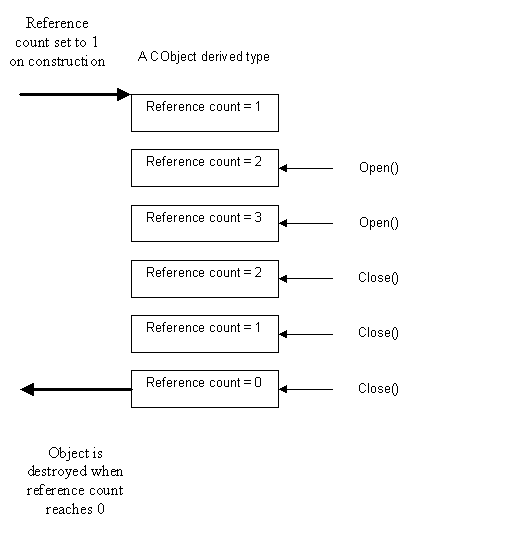

|
| |
A reference counting object is one which uses reference counting to track concurrent references to itself and which arranges for automatic destruction of itself when the final reference is removed. It is also an object which can be named.
A reference counting object is any object which has CObject as its base class.
Constructing a CObject derived type, or calling its Open() member function, adds a reference to that object by adding one to its reference count. Calling its Close() member function removes a reference by subtracting one from its reference count. When the last user of the object calls Close(), the reference count becomes zero and the object is automatically destroyed.
The following drawing shows the idea.

A DLL is an example of an entity that needs to track concurrent accesses to itself as it can be accessed concurrently by a number of threads and processes. The Kernel side class which encapsulates DLL behaviour, DLibrary, has CObject as a base class. The DLibrary object exists until all users have finished with the DLL; once the last user has closed the DLL, the DLibrary object is destroyed.
A CObject is always part of a class hierarchy. It is a base class; an explicit CObject type is never instantiated.
Many Kernel side objects such as threads, processes and semaphores are instances of CObject derived classes.
An object which is intended to be referenced by a handle should derive from CObject. Collectively, reference counting objects, object containers and object indexes provide the behaviour for generating handle-numbers.
The server side implementation of a client/server subsession uses a CObject.
See also:
Copyright ©2002 Symbian Ltd. 6.1-00174 |
|